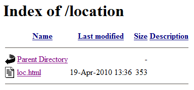

Location 对象及其方法及属性并不属于 W3C 规范范畴，这是各浏览器自行实现的 "Browser Object Model" （BOM），但这些方法和属性有着很好的兼容性。可以通过 window.location 访问到该对象。
当 window.location 直接作为字符串使用时，它与 Location 对象的 href 属性相等，即 "window.location == window.location.href" ，可以使用 window.location 对 Location 对象的 href 属性进行读取及设置。
更多资料参见：MSDN、Mozilla Developer Center。
IE 在遇到 location="" 或 location.href="" 时，会将页面跳转到当前 URL 中页面所在目录的根目录上。
若包含有 location="" 或 location.href="" 的代码的页面仅在 IE 中测试，并且作者意图刚好为将页面跳转至当前文件所在目录的根目录，则代码仅能在 IE 中正常跳转，其他浏览器可能出现异常现象，如跳转至空白页面、反复刷新。
| IE6 IE7 IE8 |
|---|
首先查看各浏览器对 location="" 的不同处理：
测试代码如下：
<script>
location="";
</script>
上面代码中，使用 location 赋值为空字符串，即 window.location.href=""。
使用 Apache 作为服务器，代码文件放置到服务器目录中，此时在各浏览器中的运行效果如下：
| IE | Firefox Chrome Safari | Opera |
|---|---|---|
|  | 空白页面，不断刷新 | 空白页面 |
在为 location 或 location.href 赋值做页面跳转时必须保证所赋的字符串地址的合法性，不要使用空字符串。
| 操作系统版本: | Windows 7 Ultimate build 7600 |
|---|---|
| 浏览器版本: |
IE6 IE7 IE8 Firefox 3.6.3 Chrome 5.0.375.7 dev Safari 4.0.5 Opera 10.51 |
| 测试页面: | loc.html |
| 本文更新时间: | 2010-07-12 |
location href window 跳转 BOM URL